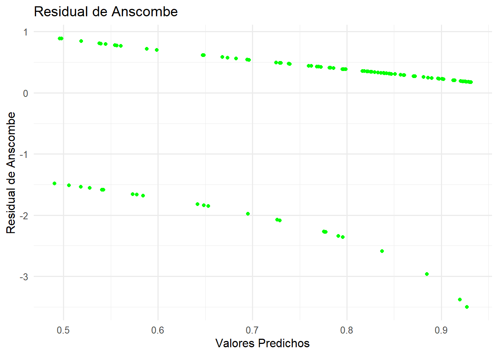
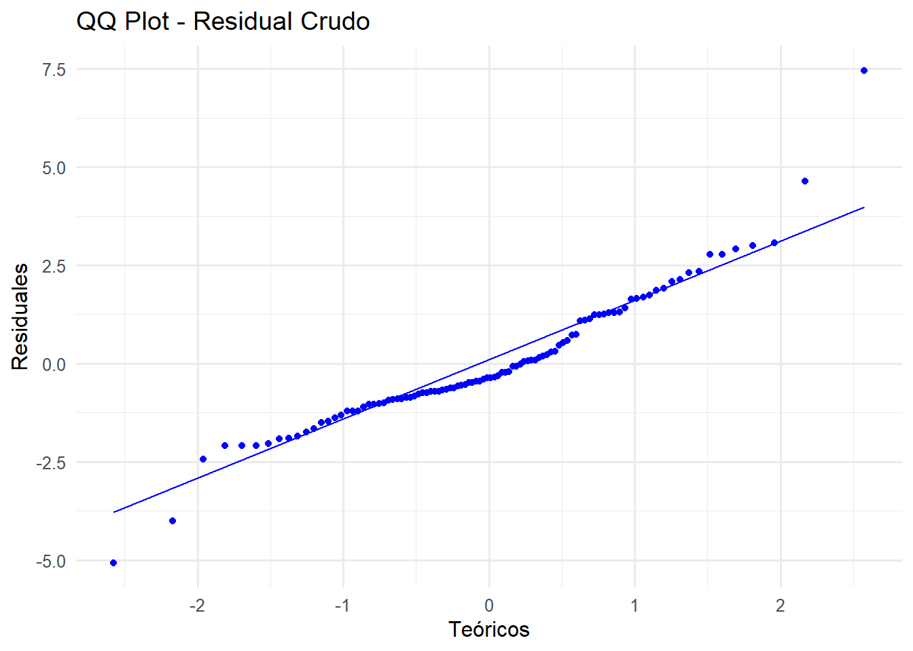
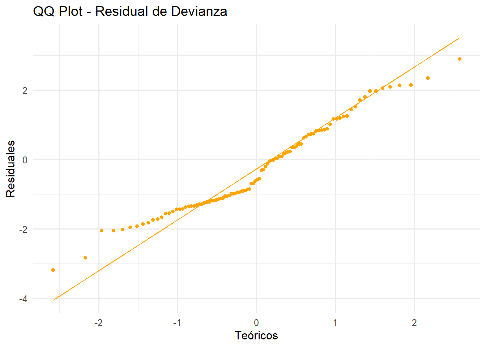

rm(list = ls())Algoritmo de Fisher Scoring
library(GGally)
library(ggplot2)
library(dplyr)
library(readxl)Regresión Poisson
- Sean \(Y_1, Y_2, \cdots, Y_n\) variables aleatorias independientes con distribución Poisson, tales que
\[Y_i \sim Poisson(\mu_i) \quad i=1,2,\cdots,n.\] Sabemos que en la distribución Poisson, el parámetro canónico está dado por \(\theta_i = \ln(\mu_i)\).
En el contexto de un modelo de regresión, el predictor lineal \(\eta_i\) está dado por
\[\eta_i = \beta_0 + \beta_1X_1 + \beta_2X_2 + \cdots + \beta_pX_p,\] y la relación entre el predictor \(\eta_i\) y la media \(\mu_i\), en el caso de la regresión Poisson, está dada por
\[\eta_i = \ln(\mu_i) \Rightarrow \mu_i = \exp(\eta_i).\]
La función de log-verosimilitud es como sigue
\[ \begin{align*} \mathcal{l}(\beta) &= \sum_{i=1}^n \left[y_i\ln(\mu_i) - \mu_i - \ln(y_i!)\right]\\ &= \sum_{i=1}^n \left[y_i x_i^t \beta - \exp(x_i^t \beta) - \ln(y_i!)\right] \end{align*} \]
La función score (vector de primeras derivadas) está dado por
\[\frac{\partial \mathcal{l}(\beta)}{\partial \beta} = \sum_{i=1}^n (y_i - \mu_i)x_i.\] La Matriz de Información de Fisher es como sigue
\[\mathcal{J}(\beta) = Inf = X^tWX\] donde
\[W = diag\left(\frac{\left(\frac{\partial \mu_i}{\partial \eta_i}\right)^2}{Var(y_i)}\right)\] \[\frac{\partial \mu_i}{\partial \eta_i} = \mu_i, \quad \quad \quad \frac{\partial \eta_i}{\partial \mu_i} = \frac{1}{\mu_i}\] Como en la distribución Poisson, \(Var(Y_i) = \mu_i\), se tiene que
\[w_{ii} = \frac{\mu_i^2}{\mu_i} =\mu_i\] y la variable ajustada \(\widetilde{y}\) está dada por \[\widetilde{y} = \eta_i + (y_i - \mu_i)\frac{\partial \eta_i}{\partial \mu_i} = \eta_i + (y_i - \mu_i)\frac{1}{\mu_i}\]
De esta forma, el Algoritmo de Fisher-Scoring queda determinado por los siguientes pasos:
- Iniciar el algoritmo con un valor inicial para \(\beta\). Se usará una estimación inicial de \(\beta_0^{(0)}\) usando la media global de \(y\)
\[ \beta_0^{(0)} = \log\left(\frac{1}{n}\sum_{i=1}^n y_i\right), \quad \beta_1^{(0)} = 0, \quad \cdots, \quad \beta_p^{(0)} = 0. \]
- Obtener \(\beta^{(k+1)}\) a partir de \(\beta^{(k)}\) usando la siguiente expresión
\[\beta^{(k+1)} = \left(X^tW^{(k)}X\right)^{-1}X^tW^{(k)}\widetilde{y}^{(k)}.\]
- Repetir (2) hasta satisfacer un criterio de convergencia. El criterio de convergencia que se usará en este caso es el siguiente
\[\max_j \left| \beta_j^{(k+1)} - \beta_j^{(k)} \right| < \epsilon, \quad \quad \epsilon=0.0000001\]
Residuales
El estudio de los residuales es importante ya que ayuda a evaluar la calidad del modelo y detectar posibles desviaciones de los supuestos del mismo. En este caso se ha trabajado con los residuales crudos, los residuales de Pearson, los residuales de devianza y los residuales de Anscombe.
Residuales crudos (o de respuesta): estos residuales son normalmente usados en modelos de regresión lineal; en modelos lineales generalizados realmente no son tan eficientes. Sin embargo, se decidió usar este tipo de residuales debido a que se quiere comparar con los otros tipos. Estos residuales representan la diferencia entre el valor observado y el valor ajustado de la media:
\[r = y-\hat{\mu}\]
Residuales de Pearson: estandariza el residual crudo dividiéndolo por la desviación estándar estimada para la distribución en cuestión. La formula general y en el caso de la Poisson son:
\[r_{P}=\frac{y-\hat{\mu}}{\sqrt{Var(\hat{\mu})}}\Longrightarrow\frac{y-\hat{\mu}}{\sqrt{\hat{\mu}}}\]
Residuales de devianza: los residuos de devianza, como conjunto, suelen ser más cercanos a la normalidad con distribuciones GLM no normales que los residuos de Pearson.
\[r_{D}=sign(y-\mu)\sqrt{d_{i}},\hspace{3cm}donde:d_{i}=\sqrt{2 \left[ \ell(y_i; y_i) - \ell(\hat{\mu}_i; y_i) \right]}\] Para el caso de la Poisson:
\[r_{D}=sign(y-\mu)\sqrt{2\left(y\cdot log(\frac{y}{\mu})-(y-\mu)\right)}\]
Residuales de Anscombe: como los residuales de Pearson suelen ser sesgados para distribuciones no normales y esto ocasionaba que no podía tener propiedades similares a la de los residuos de la teoría normal, Anscombe propuso definir un residuo utlizando una función \(A(y)\) en lugar de y, la formula general y en el caso de la Poisson son:
\[A(\cdot)=\int \frac{d\mu}{V^{1/3}(\mu)}\Longrightarrow\int\frac{d\mu}{\mu^{1/3}}=\frac{3}{2}\mu^{2/3}\]
Para la distribución Poisson:
\[r_{A}=\frac{\frac{3}{2}(y^{2/3}-\mu^{2/3})}{\mu^{1/6}}\]
Datos a usar
A continuación se presenta el algoritmo para encontrar una aproximación de \(\beta\) usando datos reales.
Datos de jugadores de baloncesto de la temporada 2022-2023, los cuales incluyen la edad del jugador (AGE), tiempo en minutos jugado en la temporada (MIN), juegos participados (GP), tiros de campo hechos (FGM), tiros de campo intentados (FGA), tiros de campo hechos de 3 puntos (FG3M), tiros de campo intentados de 3 puntos (FGA) y puntos realizados en la temporada (PTS).
# seleccionamos las variables de interés
players <- read_excel("players_202223.xlsx") %>%
select(AGE, MIN, GP, FGM, FGA, FG3M, FG3A, FTM, FTA, PTS)players %>%
ggpairs(
upper = list(continuous = wrap("cor", size = 3)),
diag = list(continuous = wrap("barDiag", colour = "burlywood")),
lower = list(continuous = wrap("points", alpha = 0.5, shape = 20,
fill = "lightblue")),
axisLabels = "none")
En la matriz de dispersión realizada se usó el coeficiente de correlación de Pearson, el cuál nos muestra que la mayoría de las variables tienen una alta correlación lineal con la variable respuesta, puntos realizados en la temporada (PTS).
Se puede evidenciar que entre las variables tambien se presentan algunas correlaciones casi perfectas, como se presentan entre las variables FGM y FGA, FG3M y FG3A, y FTM y FTA, lo cual tiene sentido ya que los pares de variables mencionadas deberían estar relacionadas entre sí, ya que a nivel general una variable es el número de intentos totales de tiros, mientras que la otra es cuántos de esos tiros lograron ser encestados.
Por otro lado, se observa una baja correlación lineal entre la variable AGE y el resto de las variables, incluida la variable respuesta PTS. Además, en los gráficos de dispersión no se evidencia ningún tipo de correlación entre estas variables, ya que los datos se encuentran muy dispersos.
x1 <- players %>% select(-last_col())
X <- model.matrix(~ ., data = x1) # Matriz diseño, con intercepto
y <- players$PTS # Variable respuestaAlgoritmo de Fisher-Scoring
# Creación de la función
fisher_scoring_poisson <- function(y, X, beta_init, tol = 1e-7, max_iter = 100){
# Nombramos un objeto donde se guardará el beta inicial (beta_init)
beta <- beta_init
# iniciamos el bucle
for (iter in 1:max_iter){
# creamos un objeto "eta" que será la parte sistemática del modelo
eta <- X %*% beta
# creamos un objeto "mu" donde se guarda el despeje de la media de "eta"
mu <- exp(eta)
# creamos la matriz diagonal "W"
W <- diag(as.vector(mu))
# creamos el objeto z (variable de trabajo y^~)
z <- eta + (y - mu) / mu
# obtenemos el nuevo beta
beta_new <- solve(t(X) %*% W %*% X) %*% (t(X) %*% W %*% z)
# guardamos la matriz de varianzas y covarianzas de los betas
cov_beta <- solve(t(X) %*% W %*% X)
if (max(abs(beta_new - beta)) < tol) {
message("El algoritmo convergió en la iteración ", iter)
mu_hat <- as.vector(exp(X %*% beta_new))
# residual crudo
residual <- y - mu_hat
# residual de pearson
residual_pearson <- (y - mu_hat) / sqrt(mu_hat)
#Residual Anscombe
residual_anscombe <- (3/2) * (y^(2/3) - mu_hat^(2/3)) / (mu_hat^(1/6))
# Residual de devianza
residual_deviance <- sign(y - mu_hat) * sqrt(2 * (y * log(ifelse(y == 0, 1, y / mu_hat)) - (y - mu_hat)))
return(list( beta = as.vector(beta_new), predichos = mu_hat, covarianza = cov_beta, residual = residual,
residual_pearson = residual_pearson,
residual_anscombe = residual_anscombe,
residual_deviance = residual_deviance))
}
beta <- beta_new
}
warning("El algoritmo no convergió")
return(NULL)
}# Ejecutamos la función
beta_inicial <- c(log(mean(y)), rep(0, ncol(X)-1)) # beta inicial
regresion_poisson <- fisher_scoring_poisson(y = y, X = X, beta_init = beta_inicial)El algoritmo convergió en la iteración 7# Estimación de los parámetros del modelo
names(regresion_poisson$beta) <- c("Intercept", "AGE", "MIN", "GP", "FGM", "FGA", "FG3M", "FG3A", "FTM", "FTA")
regresion_poisson$beta Intercept AGE MIN GP FGM
4.1116424116 0.0076175147 0.0000747274 0.0181945865 0.0019076539
FGA FG3M FG3A FTM FTA
0.0002784068 0.0036404818 -0.0011454886 0.0001737093 0.0002852445 Estimación de los parámetros usando la función glm del paquete stats
modelo_poisson_glm <- glm(y ~ X - 1, family = poisson(link = "log"))
names(modelo_poisson_glm$coefficients) <- names(regresion_poisson$beta)
modelo_poisson_glm$coefficients Intercept AGE MIN GP FGM
4.1116424116 0.0076175147 0.0000747274 0.0181945865 0.0019076539
FGA FG3M FG3A FTM FTA
0.0002784068 0.0036404818 -0.0011454886 0.0001737093 0.0002852445 En la siguiente tabla se puede ver la comparación con ambos métodos:
| Variable | fisher_scoring_poisson | glm |
|---|---|---|
| (Intercept) | \(\hat{\beta_0} = 4.111\) | \(\hat{\beta_0} = 4.112\) |
| AGE | \(\hat{\beta_1} = 0.007617\) | \(\hat{\beta_1} = 0.007618\) |
| MIN | \(\hat{\beta_2} = 0.00007472\) | \(\hat{\beta_2} = 0.00007473\) |
| GP | \(\hat{\beta_3} = 0.01819\) | \(\hat{\beta_3} = 0.01819\) |
| FGM | \(\hat{\beta_4} = 0.001907\) | \(\hat{\beta_4} = 0.001908\) |
| FGA | \(\hat{\beta_5} = 0.0002784\) | \(\hat{\beta_5} = 0.0002784\) |
| FG3M | \(\hat{\beta_6} = 0.003640\) | \(\hat{\beta_6} = 0.003640\) |
| FG3A | \(\hat{\beta_7} = -0.001145\) | \(\hat{\beta_7} = -0.001145\) |
| FTM | \(\hat{\beta_8} = 0.0001737\) | \(\hat{\beta_8} = 0.0001737\) |
| FTA | \(\hat{\beta_9} = 0.0002852\) | \(\hat{\beta_9} = 0.0002852\) |
Los resultados parecen ser exactamente los mismos
all.equal(regresion_poisson$beta, modelo_poisson_glm$coefficients)[1] TRUELa matriz de covarianza estimada obtenida mediante el algoritmo de Fisher-Scoring coincide con la obtenida a través de la función glm, salvo por algunas diferencias numéricas muy pequeñas
all.equal(regresion_poisson$covarianza, vcov(modelo_poisson_glm))[1] "Attributes: < Component \"dimnames\": Component 1: 1 string mismatch >"
[2] "Attributes: < Component \"dimnames\": Component 2: 1 string mismatch >"
[3] "Mean relative difference: 1.183917e-07" Las desviaciones estándar estimadas con ambos métodos son las siguientes:
sqrt(diag(regresion_poisson$covarianza)) (Intercept) AGE MIN GP FGM FGA
1.573243e-02 4.749512e-04 8.853810e-06 2.315808e-04 7.836140e-05 4.481510e-05
FG3M FG3A FTM FTA
2.317290e-04 1.008010e-04 9.716799e-05 8.408862e-05 sqrt(diag(vcov(modelo_poisson_glm))) Intercept AGE MIN GP FGM FGA
1.573243e-02 4.749512e-04 8.853809e-06 2.315807e-04 7.836140e-05 4.481510e-05
FG3M FG3A FTM FTA
2.317290e-04 1.008010e-04 9.716799e-05 8.408862e-05 Son exactamente las mismas.
A continuación, se muestran gráficamente los cuatro tipos de residuales calculados: residuales crudos, residuales de pearson, residuales de Anscombe y residuales de devianza
df_residuals <- data.frame(
predichos = regresion_poisson$predichos,
residual = regresion_poisson$residual,
residual_pearson = regresion_poisson$residual_pearson,
residual_anscombe = regresion_poisson$residual_anscombe,
residual_deviance = regresion_poisson$residual_deviance
)# Gráfico de los tres tipos de residuales
p1 <- ggplot(df_residuals, aes(x = predichos, y = residual)) +
geom_point(color = 'blue') +
labs(title = 'Residual Crudo', x = 'Valores Predichos', y = 'Residual Crudo') +
theme_minimal(12)
p2 <- ggplot(df_residuals, aes(x = predichos, y = residual_pearson)) +
geom_point(color = 'red') +
labs(title = 'Residual de Pearson', x = 'Valores Predichos', y = 'Residual de Pearson') +
theme_minimal(12)
p3 <- ggplot(df_residuals, aes(x = predichos, y = residual_anscombe)) +
geom_point(color = 'green') +
labs(title = 'Residual de Anscombe', x = 'Valores Predichos', y = 'Residual de Anscombe') +
theme_minimal(12)
p4 <- ggplot(df_residuals, aes(x = predichos, y = residual_deviance)) +
geom_point(color = 'orange') +
labs(title = 'Residual de Devianza', x = 'Valores Predichos', y = 'Residual de Devianza') +
theme_minimal(12)p1; p2; p3; p4


Regresión Binomial
Sean \(Y_1, Y_2, \cdots, Y_n\) variables aleatorias independientes con distribución Binomial, tales que
\[Y_i \sim Binomial(n_i, p_i) \quad i=1,2,\cdots,n.\] donde \(n_i\) es el número de ensayos (conocido) para la observación \(i\), y \(p_i\) es la probabilidad de éxito. La variable \(Y_i\) representa el número de éxitos en los \(n_i\) ensayos.
La media de \(Y_i\) es \(\mu_i = E[Y_i] = n_i p_i\).
La función de enlace canónica (y más común) para la probabilidad \(p_i\) es la logit:
\[\eta_i = logit(p_i) = \ln\left(\frac{p_i}{1-p_i}\right)\] donde \(\eta_i\) es el predictor lineal: \[\eta_i = \beta_0 + \beta_1X_{i1} + \beta_2X_{i2} + \cdots + \beta_pX_{ip} = x_i^T \beta\]
La relación inversa, que expresa la probabilidad \(p_i\) en función del predictor lineal, es la función logística: \[p_i = \frac{e^{\eta_i}}{1+e^{\eta_i}}\] Y por lo tanto, la media \(\mu_i\) se relaciona con \(\eta_i\) a través de: \[\mu_i = n_i p_i = n_i \frac{e^{\eta_i}}{1+e^{\eta_i}}\]
La función de log-verosimilitud (ignorando términos constantes como \(\ln\binom{n_i}{y_i}\)) es: \[ \begin{align*} \mathcal{l}(\beta) &= \sum_{i=1}^n \left[y_i\ln(p_i) + (n_i - y_i)\ln(1-p_i)\right]\\ &= \sum_{i=1}^n \left[y_i \eta_i - n_i \ln(1+e^{\eta_i})\right] \\ &= \sum_{i=1}^n \left[y_i (x_i^T \beta) - n_i \ln(1+\exp(x_i^T \beta))\right] \end{align*} \]
La función score (vector de primeras derivadas) se puede derivar y resulta ser: \[\frac{\partial \mathcal{l}(\beta)}{\partial \beta} = \sum_{i=1}^n (y_i - n_i p_i)x_i = \sum_{i=1}^n (y_i - \mu_i)x_i = X^t(y - \mu)\]
La Matriz de Información de Fisher es \(I(\beta) = X^tWX\), donde \(W\) es una matriz diagonal. Para calcular los elementos \(w_{ii}\) de \(W\), necesitamos la varianza \(Var(Y_i)\) y la derivada \(d\mu_i / d\eta_i\): \[Var(Y_i) = n_i p_i (1-p_i)\] \[\frac{\partial \mu_i}{\partial \eta_i} = \frac{\partial (n_i p_i)}{\partial \eta_i} = n_i \frac{\partial p_i}{\partial \eta_i} = n_i \frac{e^{\eta_i}}{(1+e^{\eta_i})^2} = n_i p_i (1-p_i)\] Entonces, los pesos son: \[w_{ii} = \frac{\left(\frac{\partial \mu_i}{\partial \eta_i}\right)^2}{Var(y_i)} = \frac{(n_i p_i (1-p_i))^2}{n_i p_i (1-p_i)} = n_i p_i (1-p_i)\]
Nuestro \(\widetilde{y}\) para el algoritmo Fisher Scoring es: \[\widetilde{y} = \eta_i + (y_i - \mu_i)\frac{\partial \eta_i}{\partial \mu_i}\] Dado que \(\frac{\partial \eta_i}{\partial \mu_i} = \left(\frac{\partial \mu_i}{\partial \eta_i}\right)^{-1} = \frac{1}{n_i p_i (1-p_i)}\), tenemos: \[\widetilde{y} = \eta_i + \frac{y_i - \mu_i}{n_i p_i (1-p_i)}\]
El Algoritmo de Fisher-Scoring para la regresión binomial (logit) es:
- Iniciar con un valor \(\beta^{(0)}\).
- Obtener \(\beta^{(k+1)}\) a partir de \(\beta^{(k)}\) usando:
- Calcular \(\eta^{(k)} = X \beta^{(k)}\).
- Calcular \(p^{(k)}_i = 1 / (1 + \exp(-\eta^{(k)}_i))\).
- Calcular \(\mu^{(k)}_i = n_i p^{(k)}_i\).
- Calcular pesos \(w^{(k)}_{ii} = n_i p^{(k)}_i (1-p^{(k)}_i)\). Formar \(W^{(k)}\).
- Calcular \(\widetilde{y}^{(k)}_i = \eta^{(k)}_i + (y_i - \mu^{(k)}_i) / w^{(k)}_{ii}\). Formar \(\widetilde{y}^{(k)}\).
- Actualizar \(\beta^{(k+1)} = \left(X^tW^{(k)}X\right)^{-1}X^tW^{(k)}\widetilde{y}^{(k)}\).
- Repetir el paso (2) hasta la convergencia.
Datos simulados
A continuación, adaptaremos el algoritmo para un caso binomial usando datos generados por simulación.
## Población binomial
# Parámetros
set.seed(1040)
n <- 100
beta <- c(0, 0.2)# Simulación de datos
xbin <- runif(n, min = 0, max = 10)
X2 <- model.matrix(~ xbin) # Incluye intercepto automáticamente
eta <- X2 %*% beta# Dataset simulado
pi <- exp(eta)/(1+exp(eta))
yb <- c()
for (i in 1:n) {
yb[i] <- rbinom(1,size = 1,prob = pi[i])
}
data_bin <- tibble(y = yb, x = xbin)A continuación se presentan los datos simulados
ggplot(data_bin, aes(x = x, y = y)) +
geom_jitter(height = 0.02, width = 0,
alpha = 0.6, size = 3, color = "#1f77b4") +
ggtitle("Distribución binomial - Datos simulados") +
theme_minimal(12)
Algoritmo de Fisher-Scoring
El algoritmo de Fisher-Scoring para la regresión logística se presenta a continuación
# Creación de la función
fisher_scoring_binomial <- function(y, X, beta_init, tol = 1e-5, max_iter = 100) {
beta <- beta_init
for (iter in 1:max_iter) {
eta <- X %*% beta
pi <- exp(eta) / (1 + exp(eta))
pi <- pmax(pmin(pi, 1 - 1e-10), 1e-10)
W <- diag(as.vector(pi * (1 - pi)))
z <- eta + (y - pi) / (pi * (1 - pi))
beta_new <- tryCatch({
solve(t(X) %*% W %*% X) %*% (t(X) %*% W %*% z)
}, error = function(e) {
stop("Fallo al invertir la matriz. ¿X tiene multicolinealidad?")
})
# guardamos la matriz de varianzas y covarianzas de los betas
cov_beta <- solve(t(X) %*% W %*% X)
if (max(abs(beta_new - beta), na.rm = TRUE) < tol) {
message("Convergió en iteración ", iter)
pi_hat <- exp(X %*% beta_new) / (1 + exp(X %*% beta_new))
pi_hat <- pmax(pmin(pi_hat, 1 - 1e-10), 1e-10)
# Resdiaul crudo
residual <- y-pi_hat
# Residual de pearson
residual_pearson <- (y - pi_hat) / sqrt(pi_hat)
# Residual de Anscombe
residual_anscombe <- 3*(y^(1/3)-pi_hat^(1/3))/(pi_hat^(1/3))
# Residual de devianza
# Handle y=0 and y=1 cases for deviance
dev <- ifelse(y == 0, 2 * pi_hat, ifelse(y == 1, 2 * (1 - pi_hat),
sqrt(2 * (y * log(y / pi_hat) + (1 - y) * log((1 - y) / (1 - pi_hat))))))
residual_deviance <- sign(y - pi_hat) * sqrt(dev)
return(list(beta = as.vector(beta_new), predichos = pi_hat,
covarianza = cov_beta,
residual = residual,
residual_pearson = residual_pearson,
residual_anscombe = residual_anscombe,
residual_deviance = residual_deviance))
}
beta <- beta_new
}
warning("No convergió")
return(as.vector(beta))
}# Ejecutamos la función
beta_binomial <- fisher_scoring_binomial(y = yb, X = X2,
beta_init = rep(0.01, ncol(X2)))Convergió en iteración 5# Estimación de los parámetros del modelo
names(beta_binomial$beta) <- colnames(X2)
beta_binomial$beta(Intercept) xbin
-0.05789329 0.26830824 modelo_logistico <- glm(yb ~ X2 - 1, family = binomial(link = "logit"))
modelo_logistico$coefficientsX2(Intercept) X2xbin
-0.05789329 0.26830824 | Variable | fisher_scoring_binomial | glm |
|---|---|---|
| (Intercept) | \(\hat{\beta_0} = -0.05789329\) | \(\hat{\beta_0} = -0.05789329\) |
| xbin | \(\hat{\beta_1} = 0.26830824\) | \(\hat{\beta_1} = 0.26830824\) |
La matriz de covarianza estimada obtenida mediante el algoritmo de Fisher-Scoring coincide con la obtenida a través de la función glm, salvo por algunas diferencias numéricas muy pequeñas
beta_binomial$covarianza; vcov(modelo_logistico) (Intercept) xbin
(Intercept) 0.19628250 -0.033856568
xbin -0.03385657 0.008452617 X2(Intercept) X2xbin
X2(Intercept) 0.19628179 -0.03385631
X2xbin -0.03385631 0.00845250La matriz de covarianza es prácticamente la misma con ambos métodos.
Residuales
A continuación, se muestran gráficamente los cuatro tipos de residuales calculados: residuales crudos, residuales de pearson, residuales de Anscombe y residuales de devianza
df_residuals <- data.frame(
predichos = beta_binomial$predichos,
residual = beta_binomial$residual,
residual_pearson = beta_binomial$residual_pearson,
residual_anscombe = beta_binomial$residual_anscombe,
residual_deviance = beta_binomial$residual_deviance
)# Gráfico de los tres tipos de residuales
p1 <- ggplot(df_residuals, aes(x = predichos, y = residual)) +
geom_point(color = 'blue') +
labs(title = 'Residual Crudo', x = 'Valores Predichos', y = 'Residual Crudo') +
theme_minimal(12)
p2 <- ggplot(df_residuals, aes(x = predichos, y = residual_pearson)) +
geom_point(color = 'red') +
labs(title = 'Residual de Pearson', x = 'Valores Predichos', y = 'Residual de Pearson') +
theme_minimal(12)
p3 <- ggplot(df_residuals, aes(x = predichos, y = residual_anscombe)) +
geom_point(color = 'green') +
labs(title = 'Residual de Anscombe', x = 'Valores Predichos', y = 'Residual de Anscombe') +
theme_minimal(12)
p4 <- ggplot(df_residuals, aes(x = predichos, y = residual_deviance)) +
geom_point(color = 'orange') +
labs(title = 'Residual de Devianza', x = 'Valores Predichos', y = 'Residual de Devianza') +
theme_minimal(12)p1; p2; p3; p4
Regresión logística con los datos del agua
A continuación, se utilizarán datos relacionados con tratamientos aplicados al agua. La variable de respuesta indica si se utilizó o no un polímero.
TURB=c(300,250,190,160,560,150,160,270,450,210,420,550,1200,420,500,150,200,390,380,140,170,1110,140,150,870,720,430,550)
COL=c(100,100,50,70,200,100,100,70,130,100,100,250,250,100,120,75,50,140,120,50,110,100,80,90,150,200,100,200)
ALCA=c(49,43,51,52,44,48,55,43,56,51,46,65,43,53,48,45,52,52,39,54,52,51,55,50,49,44,48,40)
PH=c(8.33,7.64,7.62,7.62,8.19,7.90,7.60,8.07,7.53,7.72,7.90,7.68,7.93,7.90,8.01,7.71,7.66,8.09,8.17,8.16,7.58,8.06,7.51,7.56,7.60,8.18,7.20,7.55)
TEM=c(25,27,28,26,25,26,26,24,27,27,26,27,26,26,27,27,26,27,26,25,27,23,27,27,27,23,26,27)
POL=c(0,0,0,0,0,0,0,0,0,0,1,1,1,1,0,0,0,0,0,0,0,1,0,0,1,1,1,1)Xbin2 <- model.matrix(~ TURB+COL+ALCA+PH+TEM)
regresión_logistica_agua <- fisher_scoring_binomial(y = POL,X = Xbin2, beta_init = c(log(mean(POL)/(1-mean(POL))), rep(0, ncol(Xbin2)-1)),
max_iter = 500)Convergió en iteración 9names(regresión_logistica_agua$beta) <- colnames(Xbin2)Estimación de los parámetros con el algoritmo manual y la función glm
regresión_logistica_agua$beta(Intercept) TURB COL ALCA PH TEM
79.20147632 0.02551354 -0.02288018 0.06790235 -7.21260865 -1.32268428 modelo<-glm(formula = POL ~ TURB+COL+ALCA+PH+TEM, family = 'binomial')
modelo$coefficients(Intercept) TURB COL ALCA PH TEM
79.20147609 0.02551354 -0.02288018 0.06790235 -7.21260863 -1.32268427 Vemos que los coeficientes estimados son prácticamente los mismos.
La interpretación de los coeficientes estimados del modelo es la siguiente:
- (Intercepto) = +79.20: Es el log-odds de usar el polímero cuando todas las otras variables valen cero.
- TURB (Turbiedad) = +0.0255: A mayor turbiedad del agua, aumenta ligeramente la probabilidad de usar el polímero.
- COL (Color del agua) = -0.0229: A mayor color en el agua, disminuye ligeramente la probabilidad de usar el polímero.
- ALCA (Alcalinidad) = +0.0679: A mayor alcalinidad, aumenta la probabilidad de usar el polímero.
- PH (pH del agua) = -7.21: A mayor pH, la probabilidad de usar el polímero disminuye fuertemente.
- TEM (Temperatura) = -1.32: A mayor temperatura, disminuye la probabilidad de usar el polímero.
Ahora, la matriz de covarianza de los coeficientes del modelo, se presentan a continuación
library(knitr)
kable(as.data.frame(regresión_logistica_agua$covarianza))| (Intercept) | TURB | COL | ALCA | PH | TEM | |
|---|---|---|---|---|---|---|
| (Intercept) | 5701.5958925 | 0.6338423 | -0.8040621 | 1.5213639 | -403.6113478 | -106.1212916 |
| TURB | 0.6338423 | 0.0002784 | -0.0003960 | 0.0008491 | -0.0497886 | -0.0135670 |
| COL | -0.8040621 | -0.0003960 | 0.0007516 | -0.0015103 | 0.0658858 | 0.0165754 |
| ALCA | 1.5213639 | 0.0008491 | -0.0015103 | 0.0163181 | -0.0782681 | -0.0721145 |
| PH | -403.6113478 | -0.0497886 | 0.0658858 | -0.0782681 | 31.8740451 | 6.5060599 |
| TEM | -106.1212916 | -0.0135670 | 0.0165754 | -0.0721145 | 6.5060599 | 2.3821475 |
kable(as.data.frame(vcov(modelo)))| (Intercept) | TURB | COL | ALCA | PH | TEM | |
|---|---|---|---|---|---|---|
| (Intercept) | 5701.1409892 | 0.6337396 | -0.8039306 | 1.5210028 | -403.5792534 | -106.1117714 |
| TURB | 0.6337396 | 0.0002784 | -0.0003959 | 0.0008489 | -0.0497812 | -0.0135646 |
| COL | -0.8039306 | -0.0003959 | 0.0007516 | -0.0015101 | 0.0658762 | 0.0165724 |
| ALCA | 1.5210028 | 0.0008489 | -0.0015101 | 0.0163177 | -0.0782425 | -0.0721062 |
| PH | -403.5792534 | -0.0497812 | 0.0658762 | -0.0782425 | 31.8717199 | 6.5054040 |
| TEM | -106.1117714 | -0.0135646 | 0.0165724 | -0.0721062 | 6.5054040 | 2.3819389 |
all.equal(regresión_logistica_agua$covarianza, vcov(modelo))[1] "Mean relative difference: 8.019092e-05"Es prácticamente la misma, con diferencias numéricas muy pequeñas.
Veamos cómo se comportan los residuales
df_residuals <- data.frame(
predichos = regresión_logistica_agua$predichos,
residual = regresión_logistica_agua$residual,
residual_pearson = regresión_logistica_agua$residual_pearson,
residual_anscombe = regresión_logistica_agua$residual_anscombe,
residual_deviance = regresión_logistica_agua$residual_deviance
)# Gráfico de los tres tipos de residuales
p1 <- ggplot(df_residuals, aes(x = predichos, y = residual)) +
geom_point(color = 'blue') +
labs(title = 'Residual Crudo', x = 'Valores Predichos', y = 'Residual Crudo') +
ylim(-1, 1) +
theme_minimal(12)
p2 <- ggplot(df_residuals, aes(x = predichos, y = residual_pearson)) +
geom_point(color = 'red') +
labs(title = 'Residual de Pearson', x = 'Valores Predichos', y = 'Residual de Pearson') +
ylim(-1, 1.1) +
theme_minimal(12)
p3 <- ggplot(df_residuals, aes(x = predichos, y = residual_anscombe)) +
geom_point(color = 'green') +
labs(title = 'Residual de Anscombe', x = 'Valores Predichos', y = 'Residual de Anscombe') +
ylim(-3.1, 1.3) +
theme_minimal(12)
p4 <- ggplot(df_residuals, aes(x = predichos, y = residual_deviance)) +
geom_point(color = 'orange') +
labs(title = 'Residual de Devianza', x = 'Valores Predichos', y = 'Residual de Devianza') +
ylim(-1.3, 1.15) +
theme_minimal(12)p1; p2; p3; p4

